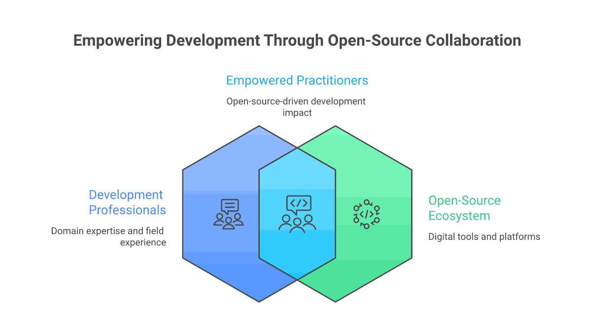

Open Source as Development Infrastructure
When we think about infrastructure for international development, we tend to picture roads, hospitals, and power grids. But there is another kind of infrastructure that is quietly reshaping how development work gets done: the open-source software ecosystem. At the centre of this ecosystem sits GitHub, a platform that hosts over 400 million repositories and serves as the collaborative backbone for millions of developers, researchers, and increasingly, development practitioners.
For organisations working in South Asia, GitHub is no longer just a place where software engineers store code. It has become a platform for sharing research tools, distributing open datasets, collaborating on monitoring frameworks, and building the digital public goods that underpin everything from health systems to climate adaptation. Understanding this ecosystem is not optional for development professionals in 2026 — it is essential.

Five Categories of Open Development Repos
GitHub's development-relevant repositories fall into five broad categories, each serving a distinct function in the practitioner's toolkit.
1. Open Data and Research Tools
Organisations like the World Bank, UNDP, and J-PAL maintain GitHub repositories with open datasets, replication code for impact evaluations, and statistical tools designed for development research. The World Bank's open data repositories alone contain thousands of datasets spanning poverty measurement, health outcomes, education access, and economic indicators across South Asian countries. For a researcher in Dhaka or a programme manager in Colombo, this represents immediate access to data that would have required months of bureaucratic requests a decade ago.
2. Digital Public Goods
The Digital Public Goods Alliance maintains a registry of open-source software, open data, open AI models, and open standards that address the Sustainable Development Goals. Projects like DHIS2 (health information systems used across India and Bangladesh), OpenSRP (smart register platforms for frontline health workers), and Mojaloop (open-source payment infrastructure) are all developed openly on GitHub. These are not side projects — they are production systems serving millions of people.
3. Monitoring, Evaluation, and Learning Frameworks
A growing number of MEL tools are being built and shared as open-source projects. Survey tools like KoboToolbox, data collection platforms like ODK (Open Data Kit), and analysis frameworks for randomised controlled trials are all GitHub-hosted and community-maintained. For development organisations with limited technology budgets, these tools represent sophisticated capabilities at zero licensing cost — provided they have the technical capacity to deploy and maintain them.
4. Climate and Environmental Data
Climate adaptation is one of South Asia's most pressing development challenges, and GitHub hosts an expanding collection of tools for climate data analysis. From satellite imagery processing pipelines to flood prediction models, from air quality monitoring dashboards to crop yield forecasting tools, the open-source climate toolkit is growing rapidly. India's own open-source contributions in this space — including tools for monsoon prediction and water resource management — are increasingly cited in international climate research.
5. Civic Technology and Governance
Civic tech projects that promote transparency, accountability, and citizen engagement are a vibrant corner of the GitHub ecosystem. Budget transparency tools, Right to Information request trackers, and open election data platforms are being built and forked across South Asian democracies. These projects demonstrate how open-source principles — transparency, collaboration, community ownership — align naturally with democratic governance values.
"The most powerful thing about open source in development is not the software itself — it is the culture of collaboration, transparency, and shared ownership that comes with it."
What This Means for South Asian Practitioners
For development professionals in South Asia, the open-source ecosystem on GitHub represents both an opportunity and a challenge. The opportunity is clear: access to world-class tools, datasets, and collaborative networks at minimal cost. A small NGO in rural Odisha can use the same data collection tools as a World Bank research team. A government data analyst in Sri Lanka can build on the same statistical libraries used by leading universities.
The challenge is capacity. Using open-source tools effectively requires technical skills that many development organisations lack. Understanding version control, reading documentation, filing issues, and contributing code are competencies that are rarely taught in development studies programmes. This is precisely the gap that platforms like ImpactMojo aim to bridge — not by turning every development professional into a software engineer, but by building enough technical literacy to navigate and leverage the open-source ecosystem.

ImpactMojo's Own Open-Source Journey
ImpactMojo itself is an open-source project hosted on GitHub. Every game, lab, course template, and data file is publicly available for anyone to inspect, fork, and adapt. We chose this path deliberately because we believe that educational resources for development should be as open as the development data they teach people to analyse.
Our repository is not just code — it is a working example of how a small team can build a comprehensive educational platform using open-source tools and practices. From our static HTML architecture (no frameworks, no build step) to our use of Supabase for backend services, every technical decision is documented and visible. We want other organisations building educational content for the development sector to be able to learn from our approach, avoid our mistakes, and build on our work.
Getting Started with GitHub for Development
- Explore the Digital Public Goods Registry to discover tools relevant to your work
- Star repositories you find useful — it helps the projects gain visibility and helps you bookmark them
- Read the issues on projects you use — they reveal how tools are being used in practice
- Start small: fix a typo in documentation, report a bug, or suggest a feature
- Join discussions — many development-focused repos have active community forums
What We Follow and Star on GitHub
To make this concrete, here is a curated look at the repositories and organisations we actively follow and star on GitHub. These are not theoretical recommendations — they are tools and datasets we use, reference, and learn from in our own work.
Organisations We Follow
These are the GitHub accounts we track for new releases, datasets, and tools relevant to development practice in South Asia:
Development & Research Organisations
- World Bank — Poverty data, macro models, and learning materials from DIME Analytics
- DIME (World Bank) — Impact evaluation tools including Google Traffic data and poverty estimation
- UNDP — Digital development compass and national carbon registry
- UNICEF — Open source inventory and MagicBox humanitarian data platform
- Development Data Partnership — Cross-organisational data collaboration
- MERL Center — Monitoring, evaluation, research, and learning resources
India Data & Civic Tech
- DataMeet — India's open data community: election data, maps, and spatial datasets
- ramSeraph — Indian open government data scripts and scrapers
- Pratap Vardhan — 780K geo-tagged rural facilities from PMGSY
- in-rolls — Electoral roll parsing and OCR tools
- OpenJustice India — Tools for scraping Indian court orders
- vanga — Indian Supreme Court and High Court judgment datasets
- econabhishek & addypy — R and Python clients for data.gov.in
- thecont1 — Clean election results data from the Election Commission
Data Tools & Social Science
- KoboToolbox & ODK — Field data collection platforms used worldwide
- OpenAQ — Open air quality data and tools
- Evidence — Business intelligence as code
- Open Legal Data — Datasets for legal text processing
- Social Science Data Lab — Methods and tools for computational social science
- Open Source Social Science — Community resources for research
- Anthropic — AI courses and Claude Code (tools we build with)
Our Top Starred Repositories
From the 90+ repositories we have starred, here are our top recommendations organised by how development practitioners might use them:
Poverty & Development Research
- Learning Poverty — Global indicator combining schooling and learning outcomes
- ML for Poverty Classification — Machine learning approaches to poverty prediction
- Poverty Mapping (Philippines) — Satellite imagery + ML for poverty estimation
- Big Data Poverty Estimation — DIME's ML models for poverty measurement
- pipr — R client for the Poverty and Inequality Platform API
- devCEQ — Fiscal microsimulation Shiny apps for tax-benefit analysis
- Coding for Economists — Practical programming guide for economics researchers
India Open Data
- India Election Data — Lok Sabha election datasets mapped and cleaned (161 stars)
- DataMeet Maps — Comprehensive spatial data repository for India (437 stars)
- Rural Facilities PMGSY — 780K geo-tagged rural facilities across India
- Indian Open Data Scripts — Collection of government data scrapers and parsers
- India Religion & Politics — Research data on religion and political patterns
- datagovindia (Python) — Python client for data.gov.in APIs
- datagovindia (R) — R wrapper for data.gov.in APIs
Digital Public Goods
- UNICEF MagicBox — Real-time data platform for humanitarian emergency response
- UNICEF Open Source Inventory — Best practices for working and leading in open
- Digital Development Compass — Automated data scraper for digital transformation metrics
- National Carbon Registry — Digital public good for carbon credit management
- ODK Central — Data collection server used in challenging environments worldwide
- KoboToolbox — Backend server for humanitarian survey data collection
Climate, Environment & Legal Data
- Awesome Air Quality — Curated list of air quality data resources
- openair — Open source tools for air quality data analysis (348 stars)
- Google Traffic (R) — Query Google Maps traffic data for development research
- Climate Modeling Courseware — Interactive Jupyter notebooks for climate science
- Indian Supreme Court Judgments — Full-text judgment dataset
- eCourts Scraper — Python library for Indian court order data
- Awesome Legal Data — Datasets and resources for legal text processing
Data Visualisation & Analysis Tools
- Evidence — Business intelligence as code: SQL + Markdown (6K stars)
- Streamlit — Build and share data apps in Python (44K stars)
- Dash — Data apps and dashboards for Python, no JavaScript required (24K stars)
- PyGWalker — Turn dataframes into interactive visual analysis UIs (15K stars)
- Great Expectations — Data quality validation and profiling (11K stars)
- Seeing Theory — Visual introduction to probability and statistics
- Awesome Computational Social Science — Resources for CSS researchers (845 stars)
Our Own Open-Source Projects
Beyond ImpactMojo itself, we maintain several open-source projects that serve the development community:
The OpenStacks Ecosystem
- OpenStacks for Change — Open-source toolkit ecosystem for development research and programme design
- RootStack — SQLite schemas and seed data for Indian development indicators
- SignalStack — Research Rundown newsletter archive and curated resources
- PolicyStack — South Asia policy tracker
- BridgeStack — API backend bridging data layers
- ViewStack — Frontend UI for data visualisation
Research & Advocacy Tools
- PolicyDhara — Auto-updating Indian development policy tracker
- JanVayu — Citizen-led platform monitoring India's air quality crisis
- ImpactLex — 390+ development terms, formulas, and case studies (PWA, now hosted on ImpactMojo)
- DevEconomics Toolkit — 11 interactive Shiny apps for development economics
- Dev Case Studies — 200 real case studies from 117 countries, fully cited
- Development Discourses — 500+ curated research papers for South Asia practitioners
- DevData Practice — Realistic practice datasets: 10 generators, 350K+ rows
The Road Ahead
The open development ecosystem on GitHub is still maturing. Discoverability remains a challenge — finding the right tool for a specific development context requires knowledge that is not easily searchable. Documentation quality varies wildly. Many promising projects are maintained by a single developer and risk abandonment. And the dominance of English in code, documentation, and discussion excludes practitioners who work primarily in other languages.
These are solvable problems, and South Asian developers and development professionals are well-positioned to solve them. The region's large and growing developer community, combined with deep domain expertise in development challenges, creates the conditions for meaningful contribution to the open-source ecosystem. What is needed is the bridge between these two worlds — and that is exactly the kind of bridge we are trying to build at ImpactMojo.